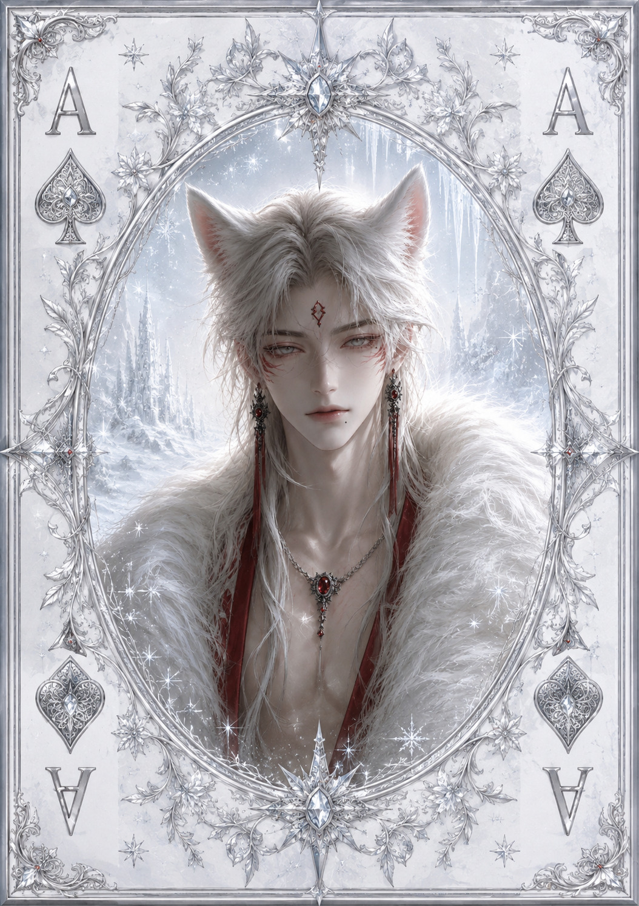

| Race | White Wolfkin |
| Gender | Male |
| Age | 29 Years |
| Nation | Frostpeaks |
| Weapon | Frostwood Longbow |
| Magic | Winter Tracking Magic |
Razer is a powerful feudal lord who controls vast territories across Frostpeaks and leads a secluded tribe that has survived for generations through hunting and adapting to the unforgiving frozen wilderness. Although his lands cover a considerable portion of the region, he has little interest in conquest and focuses primarily on maintaining the safety and prosperity of his people.
Unlike what his position might suggest, Razer is remarkably easygoing. He is playful, sarcastic, and naturally charming, often treating serious situations with humor. He is especially courteous toward women and takes pride in behaving like a gentleman, though his teasing personality is rarely far behind.
Razer is an experienced hunter who uses a Frostwood Longbow and subtle tracking magic to navigate the frozen wilderness. His abilities allow him to follow animals through severe weather and recognize signs that most travelers would completely overlook. He is not considered particularly dangerous or magically powerful, but within his own territory his knowledge of the land makes him extremely difficult to outmaneuver.
Despite living far from the political centers of Eryndor, Razer maintains close friendships with Elarion, ruler of Eliondra, and Cassiel, master of the Raven Accord. His connections give him an unusual bridge between the isolated communities of Frostpeaks and some of the most influential figures beyond its borders, though Razer himself remains far more interested in his tribe, his lands, and enjoying life than participating in political games.